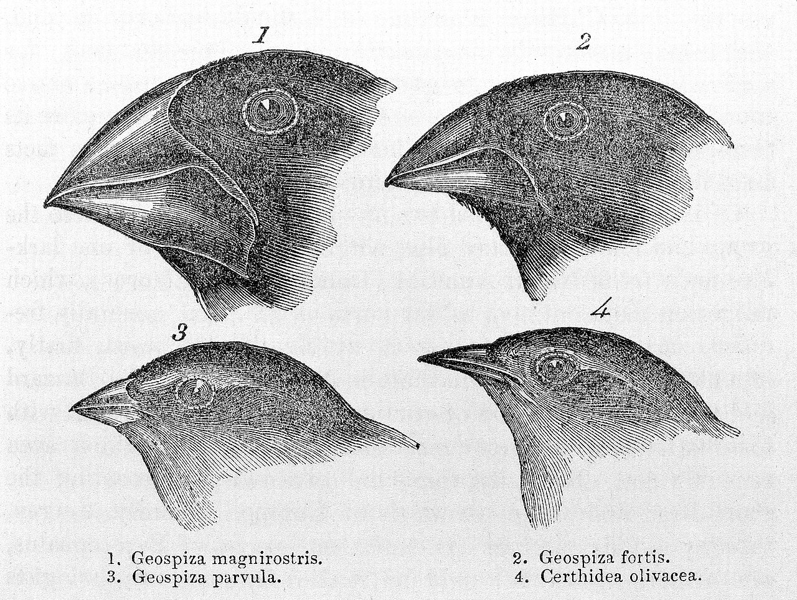

진화는 세대에서 세대로 유전형질이 전달되는 도중에 일어나는 유전자의 변화가 누적된 결과이다. 유전자 변화가 일어나는 요인은 돌연변이와 유성생식에 의한 유전자 재조합 등이다. 이를 통해 종분화가 일어나며, 그 과정에서 다른 종들이 분리가 된다. 진화가 일어나는 주요 작동 기제는, 생물 집단과 환경의 상호 관계에 의해 유전형질이 선택되는 자연선택과, 집단 안에서 이루어지는 유전자 부동이다.
찰스 다윈은 1856년 진화론을 쓰기 시작하였으나, 완성되기 전에 앨프리드 월리스로부터 자기의 학설과 똑같은 취지의 논문이 온 것을 보고 놀랐으나, 친구인 후커와 라이엘의 배려로 1858년에 린네 학회 총회에서 월리스의 논문과 함께 발표하였다. 1859년 '종의 기원'을 발표하여 생물 진화의 사실을 제시하고, '자연선택'을 수립하였다. 그에 의하면 어떤 형태의 생물이 오랜 세월동안 환경에 맞추어서 서서히 모습을 변화해간다는 것이었다. 그의 발언 중 '인간은 원숭이로부터 진화되었다'는 부분은 당시 유럽사회에 큰 충격을 주었다.